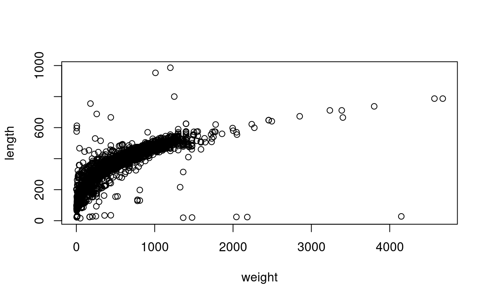
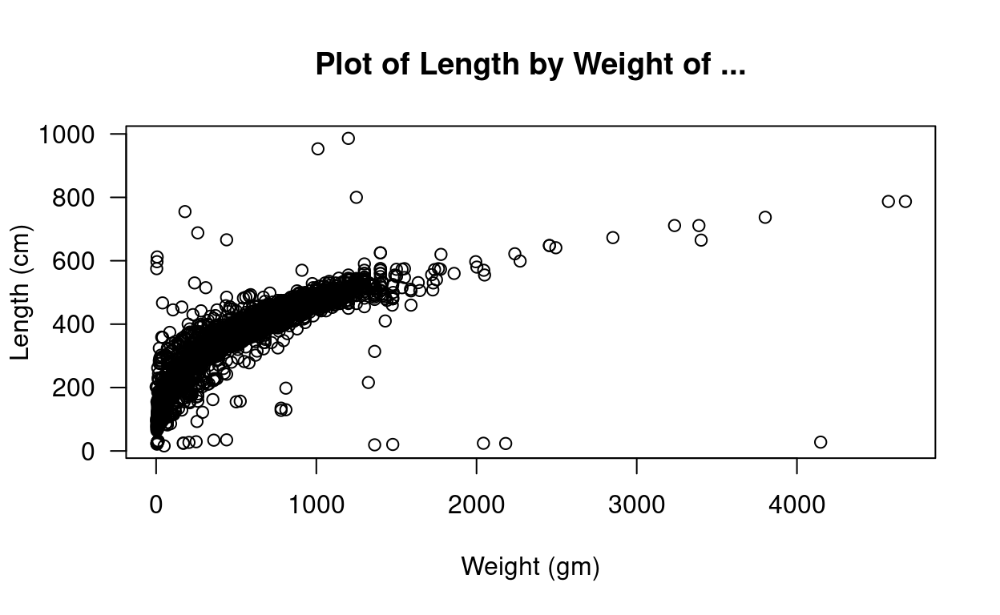
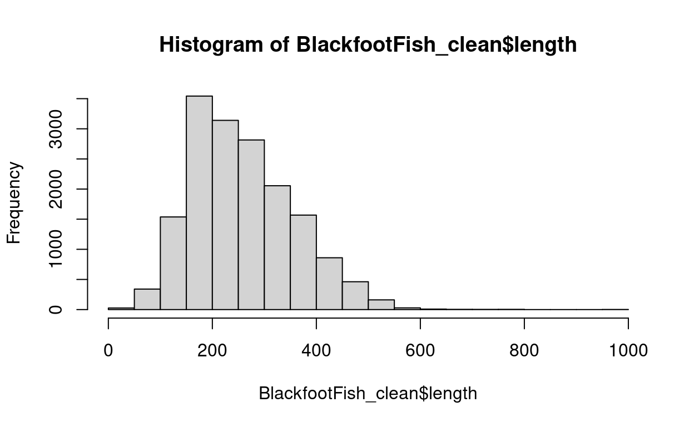
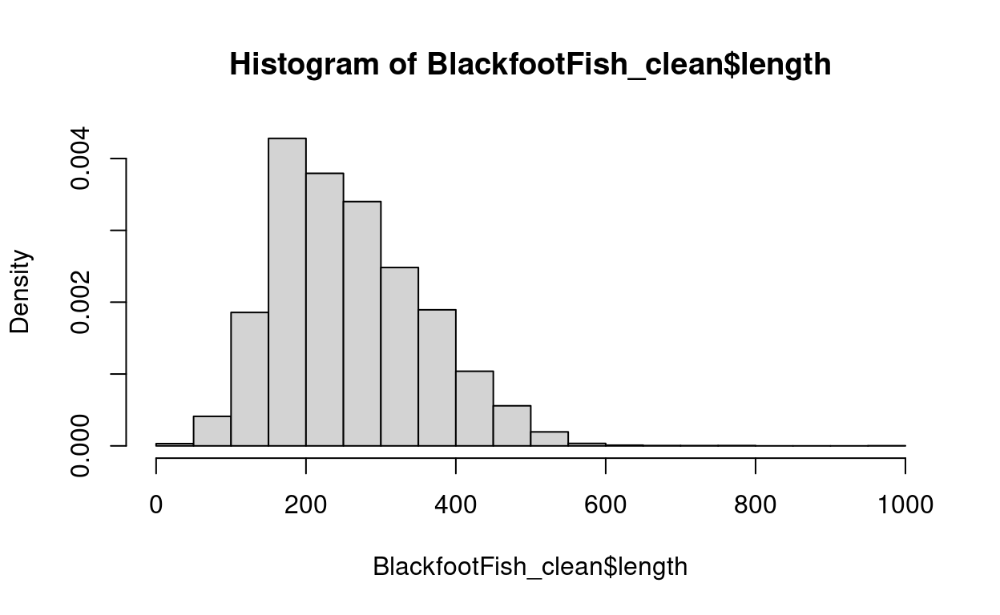
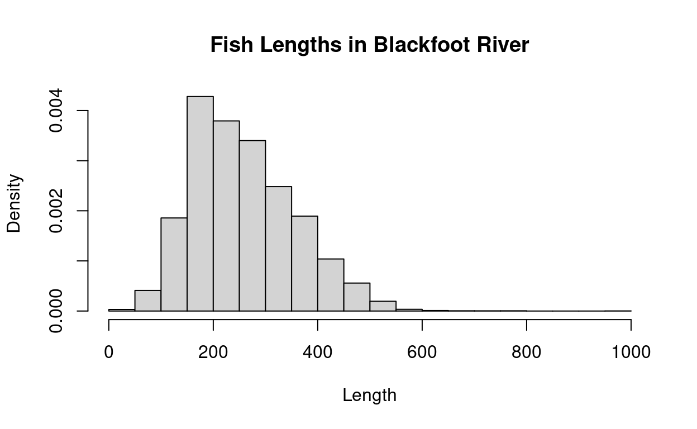
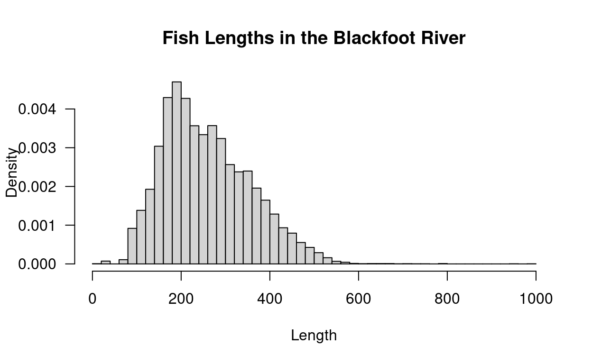
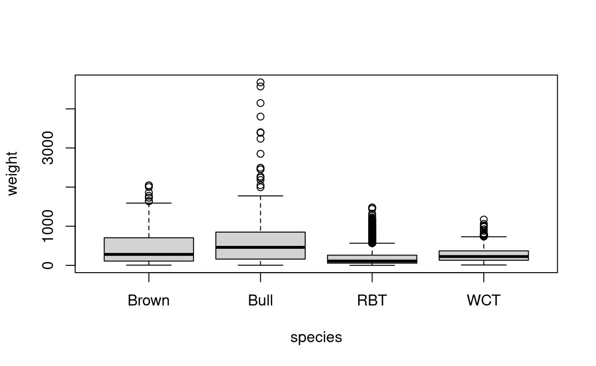
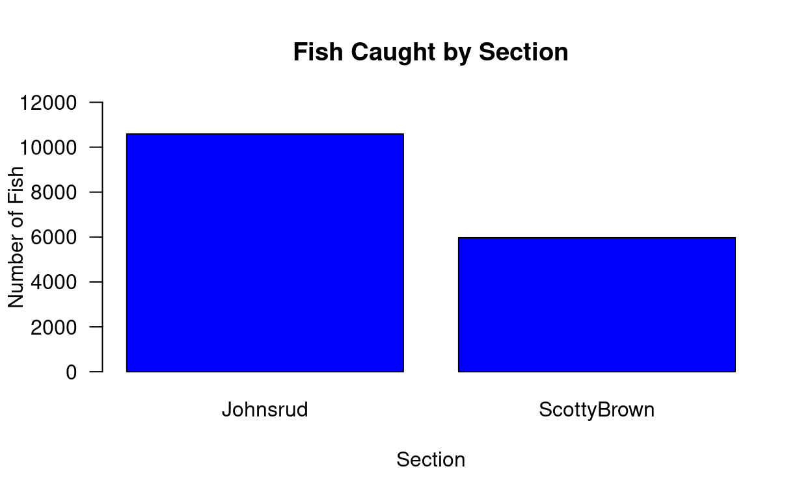

Learning Objectives
- Get comfortable with R, and each other!
- Understand the basic concepts of how to extract information from R objects
- Write reproducible code with R Markdown
- Read in data
- Learn about dataframes and how to work with them in R
- Learn how to make plots in R
- Changing data types in R
- Discuss packages and how to find help for things within R!
Introduction and Icebreakers
First and foremost, I would like to give a big thank you to everyone for coming! Hosting a bridge program like this has been an idea of mine for almost a full year now, and I am so happy that I have been given the opportunity. Of course, this course would not be possible without standing on the shoulders of a number of giants. The majority of this short course was not written by me. Rather it was carefully developed, iterated upon, re-iterated upon, and given quality changes for the past 4+ years. Without the diligence and hard work of Sara Manheimer, Harley Clifton, Eliot Liucci, Greta Linse, and Mark Greenwood, none of this would have possible. I have merely added a few minor sections, shifted around some emphasis, and changed the flow of the course to accomodate what would be typical of a bridge program / short course.
The goal of this short course is to get everyone acquainted with some
of the fundamentals of R, and to make sure that everyone
has the tools that they need to succeed in their first year of graduate
school. Before we get into a discussion of R though, we are
going to get to know each other a little bit! Before we get started on
talking about R, we are going to get to know each other a little bit.
Our first order of business is to go around the room and introduce
ourselves. Let’s all say our…
- Your name:
- Your preferred pronouns:
- What you hope to get out of this short course:
- Something fun that you did this summer:
Now that we have some essential information on everyone, we can do a couple of icebreakers! I have never been a fan of the classic “go around the room and answer some additional icebreaker questions”, so we’re going to try something that I picked up from a conference this summer! Here’s how it’s going to work: Everyone is going to stand up, and I will give a statement. If you strongly agree, you will stand more towards the right of the room. If you strongly disagree, you will stand more towards the left of the room. And if you’re somewhere in the middle, you’ll stand… somewhere in the middle! Here’s an example:
- I have a very common name
Of course, I ended up all the way on the right side of the room! Now that we have some understanding of the activities, let’s give them a try.
I can be a career statistician without any programming background
I am a good
RprogrammerI want to get better at programming in
R
So What Will We Talk About?
The term R is used to refer to both the programming
language as well as the software that interprets the scripts written
using it. The learning curve may be steeper than with other statistical
software, but with R the results of your analysis or your
plot does not rely on remembering what order you clicked on things, but
instead on the written commands you generated. In R you
will work in scripts or with dynamic documents, with scripts within them
(Rmd or Rnw files). Scripts may feel strange at first, but they make the
steps you used in your analysis clear for both you and for someone who
wants to give you feedback, further promoting the importance of
reproducible science!
RStudio is a free computer application that allows you access to the
resources of R, while providing you with a comfortable
working environment. There are many ways you can interact with
R, but for many reasons RStudio has become the most
popular. To function correctly, RStudio uses R behind the
scenes, hence both need to be installed on your computer. Both
R and RStudio are cross-platform, so that
everyone’s versions look and operate the same regardless of their
operating system!
For this workshop, we will be making use of the RStudio that you will
need to install on your computer. For more details on this, you have
hopefully completed the steps discussed here https://greenwood-stat.shinyapps.io/InstallDemo_RWorkshops/.
The short version for downloading is to first go to https://cloud.r-project.org/ to get R
installed and then go to https://posit.co/download/rstudio-desktop/ to install
RStudio.
You need to have a computer that is running Linux, Windows, or a somewhat recent macOS. Unfortunately, a Chromebook or iPad are not sufficient for installing and running R.
However you get to it, RStudio has four possible panels, where each can be viewed at the same time and has multiple tabs available.
- the Editor for your scripts and documents
(top-left)
- the
RConsole (bottom-left)
- your Environment (Objects/Variables)/History
(top-right)
- and your Files/Plots/Packages/Help/Viewer (bottom-right).
RStudio layout
You can use the Tools -> Global Options -> Appearance tab to modify the colors and font sizes in RStudio.
Working in R
The document we provided for you is an Rmarkdown (.Rmd) document. It
allows you to work in a reproducible fashion, with both code (placed in
what are called code chunks) and descriptions of results in the same
file. The grey sections that have three single quotes then
{r} will delineate a code chunk.
```{r}
1 + 1
``` You can add these with Insert -> R into a .Rmd file.
Type all of your code in these code chunks and other documentation and
interpretation of results outside of the code chunks (like we are doing
here). Although there are more complex ways to work in RStudio, you
should start today with saving this .Rmd file into a folder that also
contains any data and other figures you might want to read into this
document. When you do that, RStudio will know where to look to read in
the data so you do not need to know the path for its physical location
on your computer. Once we are done with our local work, we can also use
the Knit button to compile our work into HTML, Word (DOCX),
or PDF documents. We will demonstrate this at the end of the workshop -
but this will only work if all the code “runs” and what we have provided
you has some errors in it. One other great feature in these files is
that it does live spell-checknig - I mean spell-checking - by
underlining suspect words. We will also discuss RStudio “Projects” that
take this one step further in terms of organizing your work built around
this markdown framework. It is important to understand the various ways
to do your work in R using RStudio.
RStudio allows for you to execute commands directly from the code
chunk in the document by using the Ctrl + Enter (on
Macs, Cmd + Return) shortcut. If you place your cursor
on the line in the code chunk that you would like to run and hit this
shortcut, R will execute that line(s) of code for you.
Alternatively, you can also execute code in the console (where the
output of the commands pops up). The difference between running code in
the console and in the document is that any code you execute in the
console will be lost once you close your R session. If you
type code into the document’s code chunks, it will be saved when you
close your R session. Because we want to be able to go back
and re-run our code after today’s workshop, it is better to type the
command we want R to run in the document and save it!
If R is ready to accept commands, the R
console (in the bottom-left) will show a > prompt. When
R receives a command (by typing, copy-pasting, or using the
shortcut), it will execute it, and when finished will display the
results and show the > symbol once again. If
R is still waiting for you to provide it with additional
instructions, a + will appear in the console. This should
tell you that you didn’t finish your command. You could have forgotten
to close your parenthesis or a quotation. If this happens and you are
unsure of what went wrong, click inside the console and hit the
Esc key. Then you can start over and figure out where you
went wrong!
Calculator
Practice: Enter each of the following commands and confirm that the response is the correct answer. Try to do this in the console and by executing the code in the code chunk, both line by line and all at once.
1 + 2 ## [1] 316*9## [1] 144sqrt(2)## [1] 1.414214Creating Objects
These operations, however, are not very interesting. To do more
useful things in R, we need to assign values to an object.
To create an object, we tell R the object’s name, followed
by an assignment arrow (<-), and finally the value of
the object. This would look something like this:
x <- 6
Once we execute/run this line of code, we notice that a new object
appears in our environment window. This window shows all of the objects
that you have created during your R session. The value of
x appears next to it, since it is a scalar.
Remarks:
In the above code
<-is the assignment operator. It assigns values on the right to objects on the left. So, after executingyear <- 6, the value ofyearis6. The arrow can be read as6goes intoyear. For historical reasons, you can also use = for assignments, but not in every context. Because of the slight differences in syntax, it is best practice to always use<-for assignments.- In RStudio, typing Alt at the same time as the - key will write
<-in a single keystroke. Neat! (Option + - on MacOS)
- In RStudio, typing Alt at the same time as the - key will write
There are a few simple rules that apply when creating the same of a new object (like we did above):
Ris case sensitive, so if you name your variablecatbut then try to run the codeCat + 2, you will get an error saying thatCatdoes not exist
- You also want your object’s name to be explanatory, but not too
long. Think
current_temperatureversescurrent_temp. Do you really want to type out temperature every time?
- Finally, you cannot begin any object’s name with a number. You can
end a name with a number (e.g. clean_data2), but does that give you much
information about what is in the contents of
clean_data2relative toclean_data?
- The name cannot contain any punctuation symbols, except for
.and_(.is not recommended)
- You should not name your object the same as any common functions you
may use (
mean,sd,etc.)
Using a consistent coding style makes your code clearer to read for your future self and your collaborators.
Working with Objects
When you assign a value to an object (like we did previously)
R does not output anything by default. Writing the name of
the object will output the value of the object you created.
x <- 6
x## [1] 6Once the object has been created, you can use it! Run the following lines of code:
2.2 * x## [1] 13.24 + x ## [1] 10We can also overwrite an object’s value, so that it has a new value.
In the code below create a new object y and then we give
x a new value of 2.
y <- x + 6
x <- 2 Exercise 1:
What is the current value of y? 12 or 8? Create a code
chunk (Hint, use Ctrl + Alt + I on Windows, or
Cmd + Option + I on Mac, to insert a blank
R code chunk) and write the code to display the value of
the object.
x <- 6
y <- x + 6
x <- 2
## your code goes here!x <- 6
y <- x + 6
x <- 2
yWorking with Different Data Types
A vector is the basic data type in R. A vector is a
series of values, which can be either numbers or characters, but every
entry of the vector must be the same data type. R can tell
that you are building a vector when you use the c()
function, which concatenates a series of entries together.
temps <- c(50, 55, 60, 65)
temps## [1] 50 55 60 65To make a vector of characters, you are required to use quotation
marks (” “) to indicate to R that the value you are using
is not an object you already created in R.
animals <- c("cat", "dog", "bird", "fish")
animals## [1] "cat" "dog" "bird" "fish"Important features of a vector is the type of data they store. Run the following lines of code and decide what type of data the vectors contain.
class(temps)## [1] "numeric"class(animals)## [1] "character"Exercise 2:
Create a vector, named dec, that contains three decimal
valued numbers. Then check what data type does that vector contain?
# Exercise 2 code here!# Exercise 2 code here!
## create vector
dec <- c(1.1, 5.5, .999999)
## print contents
dec
## determine class
class(dec)Another possible data type is a logical (Boolean) value. This type of
data
takes on values of TRUE and FALSE. But, we
said that vectors could only be numbers or characters. If
TRUE and FALSE don’t have quotations around
them, then they aren’t characters. So, then they must be numbers. What
numbers do you think they are?
logic <- c(TRUE, FALSE, FALSE, TRUE)
class(logic)## [1] "logical"Exercise 3:
What happens when we try to mix different data types into one vector? Speculate what will happen when we run each of the following lines of code. How do you check what type the vectors are? But first, you should try to build some intuition and think about what types they might be.
num_char <- c(1, 2, 3, "a")
num_logic <- c(1, 2, 3, FALSE)
char_logic <- c("a", "b", "c", TRUE)
guess <- c(1, 2, 3, "4")num_char <- c(1, 2, 3, "a")
num_logic <- c(1, 2, 3, FALSE)
char_logic <- c("a", "b", "c", TRUE)
guess <- c(1, 2, 3, "4")
## check classes!
class(num_char)
class(num_logic)
class(char_logic)
class(guess)In each of these vectors, the two types of data were coerced into a single data type. This happens in a hierarchy, where some data types get preference over others. Can we draw a diagram of the hierarchy?
Lists
While the elements of vectors have to be of the same data type, a
list is a special vector in R that allows for you to store
a variety of types of objects. If you have a vector, a matrix, and/or a
character, you can store all of them into one list object!
The arguments to the list function are the components of the list, where the components can be characters, vectors, matrices, or other data structures. Here, we create a list whose components are the three vectors we’ve been working with:
my_first_list <- list(animals, temps, logic)
my_first_list## [[1]]
## [1] "cat" "dog" "bird" "fish"
##
## [[2]]
## [1] 50 55 60 65
##
## [[3]]
## [1] TRUE FALSE FALSE TRUEmy_first_list[[1]]## [1] "cat" "dog" "bird" "fish"We notice that when printing a list, the output looks a bit different. There are a whole bunch of brackets! Let’s break them down. I like to think of a list as a shelf with cubby holes. The cubby holes are the components of the list, but there are elements in each cubby.
- To get to a specific component (cubby) of a list, you use the double
brackets next to the name of the list (e.g
my_first_list[[1]]).
- To access the elements inside each cubby, you then use single square
brackets (e.g.
my_first_list[[1]][2]).
Example of lists
Named Lists
my_named_list <- list(title = "statistics",
numbers = 1:10,
data = TRUE)
my_named_list## $title
## [1] "statistics"
##
## $numbers
## [1] 1 2 3 4 5 6 7 8 9 10
##
## $data
## [1] TRUEWe see the output for a named list is slightly different. Instead of
double brackets next to each component, there are now $ and
names of the variable. This will help you understand the structure of
data.frames (coming up next)!
Importing Data
- Use the Import Dataset button in the
Environment tab
- Choose the From Text (base) option
- Click on the Browse button
- Direct the computer to where you saved the
BlackfootFish.csvdata file, click open
- It will bring up a preview of the data
- Make sure that the box labeled “Strings as factors” is not checked
- Click on the Import button
Notice the code that outputs in the console (the bottom left square). This is the code that you could have typed in the code chunk below to import the data yourself. Copy and paste the code that was output in the code chunk below.
# copy and paste the code that was used by R to import the data
# be careful to only copy the code that is next to the > signs!
BlackfootFish <- read.csv("BlackfootFish.csv")The path provided can also be simplified to just include the file name - if the .Rmd and data are saved in the same folder. If you have any trouble reading in the data set, here is code that allows you to read the data from our github repository:
BlackfootFish <- read.csv("https://github.com/saramannheimer/data-science-r-workshops/raw/master/Introduction%20to%20R/AY%202020-2021/Student%20Version/BlackfootFish.csv")In general, we can always use the read.csv or
read_csv commands in order to read in datasets. This will
be an important skill for us moving forwards, because without being able
to read in data, it is difficult to do our job as statisticians!
Structure of Data
The data we will use is organized into data tables. When you imported
the BlackfootFish data into RStudio it was saved as an object. You are
able to inspect the structure of the BlackfootFish object using
functions built in to R (no packages necessary).
Run the following code. What is output from each of the following commands?
class(BlackfootFish) ## What is the object class of the data?## [1] "data.frame"dim(BlackfootFish) ## What is the first number represent? What about the second number?## [1] 18352 7names(BlackfootFish) ## What does this output refer to?## [1] "trip" "mark" "length" "weight" "year" "section" "species"str(BlackfootFish) ## What is the structure of the data?## 'data.frame': 18352 obs. of 7 variables:
## $ trip : int 1 1 1 1 1 1 1 1 1 1 ...
## $ mark : int 0 0 0 0 0 0 0 0 0 0 ...
## $ length : num 288 288 285 322 312 363 269 160 213 157 ...
## $ weight : num 175 190 245 275 300 380 170 40 80 35 ...
## $ year : int 1989 1989 1989 1989 1989 1989 1989 1989 1989 1989 ...
## $ section: chr "Johnsrud" "Johnsrud" "Johnsrud" "Johnsrud" ...
## $ species: chr "RBT" "RBT" "RBT" "RBT" ...summary(BlackfootFish) ## What is the data type of each variable in our dataset?## trip mark length weight
## Min. :1.000 Min. :0.00000 Min. : 16.0 Min. : 0.0
## 1st Qu.:1.000 1st Qu.:0.00000 1st Qu.:186.0 1st Qu.: 65.0
## Median :2.000 Median :0.00000 Median :250.0 Median : 150.0
## Mean :1.501 Mean :0.09285 Mean :262.3 Mean : 246.2
## 3rd Qu.:2.000 3rd Qu.:0.00000 3rd Qu.:330.0 3rd Qu.: 330.0
## Max. :2.000 Max. :1.00000 Max. :986.0 Max. :4677.0
## NA's :1796
## year section species
## Min. :1989 Length:18352 Length:18352
## 1st Qu.:1991 Class :character Class :character
## Median :1996 Mode :character Mode :character
## Mean :1997
## 3rd Qu.:2002
## Max. :2006
## typeof(BlackfootFish) ## What is the storage mode of a data.frame?## [1] "list"When we inspect dataframes, or other objects in R, there
are some general functions that are useful to check the
content/structure of the data. Here are some:
- size:
dim(datasetname): rows and columns
nrow(datasetname): number of rows
ncol(datasetname): number of columns
length(datasetname$variable): length of a vector
- content:
head(datasetname): first 6 rows
tail(datasetname): last 6 rows
View(datasetname): opens viewer window in separate tab
- names:
colnames(datasetname): column names of dataframe
rownames(datasetname): row names of dataframe
- summary of content:
str(datasetname): structure of object and information about the columns
glimpse(datasetname): similar information tostr, but neater output (requirestibblepackage)
summary(datasetname): summary statistics for each column
Note: Many of these are generic functions that will work on
other data types, not just on data.frames.
Dataframes
What is a dataframe? A dataframe is a type of R object
and is the de facto structure of tabular data. You can create
dataframes by hand, but most of us do not use R to input
our data by hand. Instead, we import our data using R
commands that read in spreadsheets (read.csv,
read_csv (requires readr package),
read_excel (requires readxl package), etc.). A
dataframe is a set of columns, where each column is a vector. Thus,
columns have the same data type within the column, but
potentially different data types across columns.
For example, the columns trip, mark, and
year are integers (whole numbers), weight and
length are numeric (numbers with decimals), and
section and species are characters.
Extracting Data
If we were interested in accessing a specific variable in our
dataset, we can use the $ command. This command extracts
the specified variable (on the right of the $ sign) from
the dataset. When this is extracted, R views the variable
as a vector of entries, which is what the [1:18352] refers to.
years <- BlackfootFish$year
## extracts year from the dataset and saves it into a new variable named years
str(years) ## using the new variable (remember case matters!)## int [1:18352] 1989 1989 1989 1989 1989 1989 1989 1989 1989 1989 ...## How would you determine how long the vector is?Another method for accessing data in the dataset is using matrix notation ([row, column]). If you look to your right in the Environment window, you notice that RStudio tells you the dimensions of the BlackfootFish data. You can (roughly) view the dataset as a matrix of entries, with variable names for each of the columns. I could instead use bracket notation to perform the same task as above, using the following code.
years <- BlackfootFish[, 5]
## This takes ALL rows of data but only the fifth column
## Same as years <- BlackfootFish[1:18352, 5]
BlackfootFish[1, 5]## [1] 1989str(years)## int [1:18352] 1989 1989 1989 1989 1989 1989 1989 1989 1989 1989 ...Practice: Working with dataframes
The following is a preview of the dataframe df:
df <- data.frame(
x = c("H", "N", "T", "W", "V"),
y = c("May", "Oct", "Mar", "Aug", "Feb"),
z = c(2010, 2015, 2018, 2017, 2019)
)
dfExercise 4:
What would be output if you entered: df[3, ]?
## your code heredf[3, ]Exercise 5:
What would you input to get an output of 2015? Can you
think of two ways to do it?
## your code goes here!## way 1: using indices
df[2, 3]
## way 2: using dataframe columns
df$z[2]Exercise 6:
How would you pull off only columns x and
y? What about pulling off only columns x and
z?
## your code here!## way 1: x and y // x and z
df[,c(1, 2)] ## x and y
df[,c(1, 3)] ## x and z
## way 2
df[,-3] ## x and y
df[,-2] ## x and zExercise 7:
How would you modify the script below, to get an output of
[1] 22 24?
s <- c(22, 24, 49, 18, 1, 6)
s[]s <- c(22, 24, 49, 18, 1, 6)
## your code here!s <- c(22, 24, 49, 18, 1, 6)
## extract first and second
s[c(1, 2)]Exercise 8:
See what would happen if you entered s[3, ]. How can you
explain that result?
## enter code here. what do you think will happen?s[3,]Changing Data Type
By default, when building or importing a data frame, the columns that
contain characters (i.e., text) are coerced (= converted) into factors.
Depending on what you want to do with the data, you may want to keep
these columns as character. To do so, read.csv() and read.table() have
an argument called stringsAsFactors which can be set to
FALSE. This is what happened when we made sure that the box
“stringsAsFactors” was unchecked when importing our data.
In most cases, it is preferable to set stringsAsFactors = FALSE when importing data and to convert as a factor only the columns that require this data type. But what is a factor?
Consider the variables species and section. These variables represent
a broader class of what we call categorical variables. In R
there are two ways to store this information, (1) as a series of
character strings, or (2) as a factor. In the
early days of coding in R, factors were more efficient than
characters, since you only need to store the level of the factor each
observation went with.
Some functions in R require character vectors to be converted to factor variables to correctly handle the information. We recommend that you convert character vectors to factors and always review and possibly modify the levels of the factor variable to make the levels as explicit as possible.
In these data, species has four levels (RBT, WCT, Bull, and Brown).
The levels are the unique values that variable can take on. If we want
R to view this variable as a factor instead of character,
we need to change its data type.
unique(BlackfootFish$species) ## tells you the unique values of species## [1] "RBT" "WCT" "Bull" "Brown"BlackfootFish$speciesF <- factor(BlackfootFish$species)
## creates a new variable that is the factor version of speciesThere is also a function that will allow for you to specify the order
of the levels of a factor! As we saw before, the factor
function chooses the levels alphabetically. Suppose you would like for
the species to be in the following order: Bull, Brown, RBT, and WCT.
Using the factor function this would look like:
BlackfootFish$speciesF <- factor(BlackfootFish$species,
levels = c("Bull", "Brown", "RBT", "WCT"))If you want to check the order and names of the levels that are being
used by a factor, the levels() function can be useful:
levels(BlackfootFish$speciesF)## [1] "Bull" "Brown" "RBT" "WCT"Practice: Working with factor variables
Exercise 9:
Year was saved as an integer data type (1989 - 2006), but we may want
to consider it to be a categorical variable (a factor). Write the
R code to create a new variable called yearF
that is a factor of year (as you did with section and
species).
## exercise 9 code hereBlackfootFish$yearF <- factor(BlackfootFish$year)Exercise 10:
Now, verify that yearF is viewed as a categorical
variable, with the same levels as year. (hint: you have
already used three functions that would do this for you)
## your code hereclass(BlackfootFish$yearF)
levels(BlackfootFish$yearF)
unique(BlackfootFish$yearF)An issue with factors lies with if/when you want to change it back to
a number or character. In the code below I’ve decided that I don’t want
year to be a factor and want to change it back to numeric. What happens
when I use the as.numeric() function on the
yearF variable?
BlackfootFish$yearF <- factor(BlackfootFish$year)year_recover <- as.numeric(BlackfootFish$yearF)
ds <- data.frame(original = BlackfootFish$yearF,
recovered = year_recover)
head(ds)tail(ds)Packages
As we mentioned previously, R has many packages, which
people around the world work on to provide and maintain new software and
new capabilities for R. You will slowly accumulate a number
of packages that you use often for a variety of purposes. In order to
use the elements (data, functions) of the packages, you have to first
install the package (only once on a given computer) and then load the
package (every time).
We’re going to install a few packages that are often used.
- Use the Install button in the
Packages tab
- Type in
remotesandtidyverseinto the blank line (separated by a comma)
- Check the Install dependencies box
- Click on the Install button
There will be a large amount of output coming out of the console.
This output is R trying to download the package(s) you
requested. Once the computer has downloaded the packages, it will tell
you that “The downloaded binary packages are in”, followed
by the location of the files.
Now that the files are downloaded, we need to load them in order to use them. The following code will load each package, please run it!
library(remotes)
library(tidyverse)Notice that when loading the tidyverse package that
there is a large amount of output. This output is telling you all of the
other packages that are loaded in the tidyverse package, as
well as the functions in the tidyverse package that
overwrite (mask) functions from base R.
This is the process you go through if you ever find packages that you would like to use! Often packages that you install will need to be updated. To update a package you can click on the “Tools” tab, then click on “Check for Package Updates”. This will bring up a window that will list all of the packages that have newer versions than what you have. Click on the packages that you wish to update, or click on the “Select All” button.
Finding Help
One of the chief reasons for R’s religious following is
its wonderful documentation. If you need a function to complete a task
(say find the variance), but are not quite sure how it’s spelled, what
arguments it takes, or what package it lives in, don’t fret! The
? and help() commands are very powerful. For
functions, placing the ? before the name, will tell
R to search for that name in all of the functions, in all
of the packages you have installed.
If it finds one identical match, it will display the help file for that function in the Help tab in the bottom-right corner.
If it finds more than one identical match, it will display the functions, in their respective packages, that you have to choose from.
If it finds no identical match, it will tell you that “
No documentation for ____ in specified packages and libraries:,” and suggests you use a??instead.- A
??in front of the function name will search all ofRfor named functions similar to what you typed.
- The output will tell you what package the function is in, as well as
the function’s name (
package::function).
- A
If you would like help on a particular package, say one that you just downloaded, then you can use the same command(s) to get help. These commands will load up a help page (in RStudio) in the Help pane. Each help page is broken down into sections:
- Description: An extended description of what the function
does.
- Usage: The arguments of the function and their default values.
- Arguments: An explanation of the object each argument is
expecting.
- Details: Any important details to be aware of.
- Value: The object the function returns.
- See Also: Any related functions that may be useful.
- Examples: Some examples for how to use the function.
Functions
In R there are both functions that are built in (require
no package to be loaded), as well as functions that are housed within
specific packages. You have already used a few built in functions to
inspect the structure of the BlackfootFish data (str,
class, summary). As we know, a function
transforms an input (potentially multiple) into an output. You have to
provide R with the inputs (arguments) required for the
function to generate an output. The argument(s) inside a function happen
after the ( symbol. You know an object is a function when
it is immediately followed by a ( and the corresponding
closing ) comes after the arguments are complete. The
output of a function does not have to be numerical and it typically is
not a single number, it can be a set of things or a dataset.
Arguments describe the details of what a function is to do. Some
functions take arguments that are specified by the user, or, if left
undeclared, take on default values. These arguments are typically given
names (as seen in the help file), but the arguments are assumed to
follow the order the function expects if they are not named (also stated
in the help file). When naming an argument, the name of the argument is
followed by an = sign and then the value of the argument.
Notice that here we are using the = to declare what value
each argument is taking on, we are not creating a new
variable with that value assigned to it.
Suppose we wanted to create a vector of 10 zeros. To do this, we
would use the rep function:
# ?rep
rep(x = 0, times = 10) ## repeating 0 ten times## [1] 0 0 0 0 0 0 0 0 0 0rep(times = 10, 0) ## switching order of arguments## [1] 0 0 0 0 0 0 0 0 0 0rep(0, 10) ## no named arguments## [1] 0 0 0 0 0 0 0 0 0 0rep(10, 0) ## not what we wanted!## numeric(0)Now let’s look over some other functions that are often used:
mean(BlackfootFish$weight) ## takes a numerical input, but there are NA's in our data
mean(BlackfootFish$weight, argument here! ) ## review the help and add in the argument that removes the NA's
median(BlackfootFish$species) ## gives an error because the input is not the correct data type
cor(BlackfootFish$length, BlackfootFish$weight) ## takes multiple inputs separated by a comma
## Does cor have an option to remove NA's?## Error: <text>:4:37: unexpected symbol
## 3:
## 4: mean(BlackfootFish$weight, argument here
## ^As seen in the functions above, some functions have optional
arguments. If they are not specified by the user, then they take on
their default value (FALSE for na.rm). These
options control the behavior of the functions, such as whether it
includes/excludes NA values.
Cleaning Data
In many instances, you will deal with data that are not “clean”.
Based on the output we received from the mean() function,
we know that there are NA’s in the BlackfootFish data, possibly across a
variety of variables. Before we used na.rm as an option to
remove NA’s within a function, but the na.omit
function takes a dataframe and removes any NA’s from that dataset. Based
on the output below, how many rows in the BlackfootFish data have an NA
present?
dim(BlackfootFish) ## gives the dimensions of the dataset in (row, column) format ## [1] 18352 9dim(na.omit(BlackfootFish)) ## [1] 16556 9## na.omit takes dataframes, matricies, and vectors and returns object with incomplete cases removed
## incomplete cases are ones with any NA'sRemark: The computer is using an algorithm to return a dataset with no NA values anywhere in it. This algorithm goes through every row of the dataset and (roughly) has the following steps,
- Inspect the row to see if there is an NA anywhere in that row
- If there is an NA in that row, the logical (
is.na) evaluates to TRUE, and the row is deleted
- If there are not any NA’s in that row, the logical evaluates to
FALSE, and the row is retained
- Once it has stepped through every row, the function outputs the “cleaned” dataframe
If we wish to remove all of the NA’s from the dataset, we can use the
na.omit command from above. We can save the new “clean”
dataset under a new name (creating a new object) or under the same name
as before (replacing the old object with the new object).
BlackfootFish_clean <- na.omit(BlackfootFish)
## Creates a new dataframe, where the NA's have all been removed Data Visualization
There are many different genres of data graphics, with many different variations on each genre. Here are some commonly encountered kinds:
- scatterplots: showing relationships between two
quantitative variables
- distributions: showing distributions of a single
quantitative variable
- bar charts: displaying frequencies or densities of a single categorical variable
Scatterplots
The main purpose of the scatterplot is to show the relationship between two variables across several or many cases. Most often, there is a Cartesian coordinate system in which the x-axis represents one variable and the y-axis the second variable.
#?plot()
plot(length ~ weight,
data = BlackfootFish_clean) 
plot(length ~ weight,
data = BlackfootFish_clean,
xlab = "Weight (gm)", ## adding in axis labels
ylab = "Length (cm)",
las = 1, ## changing orientation of y-axis labels,
main = "Plot of Length by Weight of ..." ## adds a title
) 
Distribution
A histogram shows how many observations fall into a given range of values of a variable and can be used to visualize the distribution of a single quantitative variable.
hist(BlackfootFish_clean$length) 
hist(BlackfootFish_clean$length,
freq = F) ## converts to a density plot (area adds to 1) 
## Does freq need to be named?
hist(BlackfootFish_clean$length, FALSE)## Error in hist.default(BlackfootFish_clean$length, FALSE): invalid number of 'breaks'## Why is there an error about the "number of breaks"?hist(BlackfootFish_clean$length,
freq = F,
xlab = "Length", ## adds x-axis label
main = "Fish Lengths in Blackfoot River" ## adds title to plot
) 
hist(BlackfootFish_clean$length,
freq = F,
nclass = 50, ## changes the number of bins
xlab = "Length",
main = "Fish Lengths in the Blackfoot River",
las = 1 ## changes orientation of axis labels
) 
Side-by-Side Boxplots
The familiar boxplot is a simple display to use when the objective is to compare the distribution of a quantitative variable across different levels of a categorical variable.
## What other options are available to add to your boxplot?
boxplot(weight ~ species,
data = BlackfootFish_clean)
Bar Charts
Bar charts are an effective way to compare the frequencies of levels of a categorical variable.
section <- table(BlackfootFish_clean$section)
## tables the number of fish that were caught in each section
barplot(section,
xlab = "Section", ## adds axis labels to plot
ylab = "Number of Fish",
main = "Fish Caught by Section", ## adds title to plot
las = 1, ## changes orientation of axis labels
col = "blue", ## specifies what color the bars should be
ylim = c(0, 12000) ## specifies what range of y-values to plot
)
Practice: Graphing
Exercise 11:
Using statistics or graphics, which year in our dataset had the most fish caught?
BlackfootFish <- read.csv("https://github.com/saramannheimer/data-science-r-workshops/raw/master/Introduction%20to%20R/AY%202020-2021/Student%20Version/BlackfootFish.csv")
BlackfootFish_clean <- na.omit(BlackfootFish)BlackfootFish <- read.csv("https://github.com/saramannheimer/data-science-r-workshops/raw/master/Introduction%20to%20R/AY%202020-2021/Student%20Version/BlackfootFish.csv")
BlackfootFish_clean <- na.omit(BlackfootFish)
year <- table(BlackfootFish_clean$year)
barplot(year,
xlab = "year", ## adds axis labels to plot
ylab = "Number of Fish",
main = "Fish Caught by Year", ## adds title to plot
las = 1, ## changes orientation of axis labels
col = "blue", ## specifies what color the bars should be
ylim = c(0, 12000) ## specifies what range of y-values to plot
)Exercise 12:
Make a boxplot of the fish weights over the different years in the dataset.
Knitting/compiling
Hopefully at this point you have fixed all the code errors in the
file we initially provided as you learned about the R code
and functions. A final (and sometimes intermediate step) is to compile
your Rmarkdown file into an HTML, Word, or PDF document. The compiling
process will verify that the code you wrote works in the order that it
is present in the document and is your reproducible result to share with
colleagues and collaborators. The .Rmd is your archive of the code used
to produce those results from the data.
The HTML format is the least nice for printing but also has the
fewest dependencies on other software to compile. Compiling to Word
requires a word processing software like Microsoft Word. Compiling to
PDF either requires the tinytex package in R or a separate
installation of miktex, so often requires additional steps beyond what
we want to discuss today.
To attempt to knit to one of these formats, go to “Knit” and click on the triangle to select the “Knit to …” version. The entire suite of code will be re-run from beginning to end and, if it works, compiled into the document type you specified.
Exiting RStudio
Finally, when you are done with your work and attempt to exit out of
RStudio, it will ask you to save your workspace. DO NOT DO
THIS! It will just create a cluttered workspace and could even
cause you to get incorrect results. In fact, you should go into the
Tools -> Global Options and then make sure that “Save workspace to
.RData on exit” option on the first screen you will see is set to Never.
If you save your R code either as a .R or (better) an R
Markdown (.Rmd) file, you can re-create any results by simply re-running
that code or re-knitting the file. If you find that you have lots of
“stuff” in your workspace because you accidentally saved your workspace,
just run rm(list = ls()). It will delete all the data sets
from your workspace.
Terminology Used in Workshop
Command: A command is what
Rexecutes. In anRscript file (script.R), commands are automatically implied, as this type of file does not accept text, only in comments. In an Rmd (Markdown) file (report.Rmd), commands are delineated between three ticks on the top (```{r}) and three ticks (```) on the bottom.```{r} # Your code goes here ```Comment: Helpful text added into a script environment. Comments can be used to describe functions, processes, a train of thought, so that when you return to your code, tomorrow or next year, you are able to understand the purpose of each line of code! Comments are preceded by at least on
#within a code chunk.Object: A variable created in
R, to be used elsewhere in the code. Objects can be a variety of things, such as scalars (x <- 3), vectors (x <- c(1, 2, 3, 4, 5)), matrices, and dataframes, to name a few.Assignment Arrow: The assignment arrow
<-is used to assign values on the right to the objects on the left (x <- 1). For historical reasons, you can also use=for assignments, but not everywhere. Because of these slight differences, it is recommended to always use assignment arrows for assignment.Class: Most
Robjects have a class attribute, a character vector giving the names of the classes from which the object inherits. Examples of classes are numeric, factor, integer, character, dataframe, matrix, list.Vector: A vector is a list of entries, all sharing the same class. A vector has only one dimension, so data extraction uses only a single entry in brackets (e.g.
x[3]). You can create vectors of characters (c("a", "b", "c")), vectors of numbers (c(1, 2, 3)), to name a few.Matrix: Similar to what you may have seen in a mathematics class, a matrix is an object with rows and columns, where every entry in the matrix must be a number.
List: A generic vector, which contains other objects. A list can contain a variety of different classes of objects, e.g., characters, vectors, data.frames, matrices, or outputs from a model! A data.frame is a special type of list where the components are vectors and they all have the same length.
Dataframe: A dataframe is a collection of variables. Dataframes share many of the properties of matrices, where you are able to extract elements using bracket (
[]) notation, and lists, where you are able to extract columns using$. Dataframes are used as the fundamental data structure by most ofR’s statistical modeling software. Note that tibbles have been more recently created as part of the tidyverse and provide a similar but slightly different object where you can store your data.Argument: Input(s) into a function, so that an output is created. Most functions take named arguments (e.g.,
data = BlackfootFish) and the order of the arguments is assumed to follow the order found in the function’s help file. When using a named argument in a function, the name comes first, followed by an=sign, then the input.Logical Value:
TRUEandFALSEvalue(s) that can be used to turn off/on options in functions and plots, and also to manipulate data.
Workshop Materials & Recordings Available:
email Sara Mannheimer (sara.mannheimer@montana.edu)
through the MSU Library YouTube channel: https://www.youtube.com/watch?v=W6E3hpcoUkQ&feature=youtu.be
other related information: http://www.montana.edu/datascience/
How to Learn More About R and RStudio
This material is intended to provide you with an introduction to
using R for scientific analyses of data. The best way for
you to continue to learn more about R is to use it in your
research! This may sound daunting, but writing R scripts is
the best way to become familiar with the syntax. This will help you
progress through more advanced operations, such as cleaning your data,
using statistical methods, or creating graphics.
The best place to start is playing around with the code from today’s workshop. Change parts of the code and see what happens! Better yet, use the code from the workshop to investigate your own data!
Clean Code
Yes, writing code may be completely new to you, but there is a
difference between code that looks nice and code that does not.
Generally, object names should be nouns and function names should be
verbs. It is also important that your code looks presentable, so that a
friend/college/professor can read it and understand what you are doing.
For these reasons, there are style guides for writing code in
R. The two main style guides are and the slightly more
comprehensive
. Installing the styler package will allow you to highlight
code and format it in a more legible way. Visit for more.
Projects in RStudio
R projects provide a way to organize all the code and
data in one place and many consider these the best way to work in
R. We chose to avoid this step and just use a single .Rmd
file to expedite your first experience using R. A
motivation for using projects is that it is important to organize your
data and script files into the same or related locations and have
different locations for different iterations of projects. If you don’t
do this:
- it is really hard to tell which version of your data is original and
what versions are modified
- things get really messy because all types of files are mixed
together
- it’s probably hard for you to find things and relate the correct files to their respective output
Ultimately, good project organization will make your life easier! It helps ensure the integrity of your data, makes it simpler to share your code or get help with your code, allows for you know exactly what code you used on a paper, and it’s easier to pick a project back up.
It is good code writing and file storage practice to keep a set of
all related data, analysis, plots, documents, etc. in the same folder.
RStudio makes this process easy with using their projects. In an RStudio
project, all of the project’s pieces are in the same folder. This allows
for a clean workflow and a simple working directory for R.
When you are executing code for a document/script R will
search for things (such as data) in the folder as the document/script,
which is called a relative path.
Whenever you start working on a new project in RStudio, go through the following steps:
- Click on the “File” menu button, then select “New Project”
- Click “New Directory”
- Click “New Project”
- Create a name for your project (make it explanatory!)
- Select where the project should live
- Click the “Create Project” button
- Open the project!
After this process R will be searching for objects (such
as data) in the folder as the project. This allows for us to keep all of
our files in a self-contained system.
After saving your previous work today, you can try to create a project in a new folder on your computer. After you create the project, you can create a new .Rmd file and copy and paste the text from this document into this file. And move a copy of the BlackfootFish.csv into the project folder you created. Whenever you open this project it will take you directly to the work you have done in that project folder. It may be useful to close the project before exiting RStudio to avoid confusion in later sessions.
Montana State University R Workshops Team
These materials were adapted from materials generated by the Data Carpentries (https://datacarpentry.org/) and were originally developed at MSU by Dr. Allison Theobold. The workshop series is co-organized by the Montana State University Library, Department of Mathematical Sciences, and Statistical Consulting and Research Services (SCRS, https://www.montana.edu/statisticalconsulting/). SCRS is supported by Montana INBRE (National Institutes of Health, Institute of General Medical Sciences Grant Number P20GM103474). The workshops for 2021-2022 are supported by Faculty Excellence Grants from MSU’s Center for Faculty Excellence.
Research related to the development of these workshops appeared in:
- Allison S. Theobold, Stacey A. Hancock & Sara Mannheimer (2021) Designing Data Science Workshops for Data-Intensive Environmental Science Research, Journal of Statistics and Data Science Education, 29:sup1, S83-S94, DOI: 10.1080/10691898.2020.1854636
The workshops for 2022-2023 involve modifications of materials and
are licensed CC-BY.  This work is licensed under a Creative Commons
Attribution 4.0 International License.
This work is licensed under a Creative Commons
Attribution 4.0 International License.
The workshops for 2022-2023 involve modifications of materials and are being taught by:
Greta Linse
- Greta Linse is the Interim Director of Statistical Consulting and Research Services (https://www.montana.edu/statisticalconsulting/) and the Project Manager for the Human Ecology Learning and Problem Solving (HELPS) Lab (https://helpslab.montana.edu). Greta has been teaching, documenting and working with statistical software including R and RStudio for over 10 years.
Esther Birch
- Esther Birch is an instructor at MSU who has been teaching Introduction to Statistics and Intermediate Statistics full-time since 2018, when she received her M.S. in statistics. Additionally, she is the Director of the Math Testing Center. Esther greatly enjoys teaching coding in R, as well as making visualizations. Outside of statistics, she can be found puttering in her garden or losing balls on the golf course.
Fall 2022 instructors also included:
Sara Mannheimer
- Sara Mannheimer is an Associate Professor and Data Librarian at Montana State University, where she helps shape practices and theories for curation, publication, and preservation of data. Her research examines the social, ethical, and technical issues of a data-driven world. She is the project lead for the MSU Dataset Search, and she is working on a book about data curation to support responsible qualitative data reuse and big social research.
Harley Clifton
- Harley Clifton is an undergraduate senior pursuing a degree in Mathematics (Statistics Option) with a minor in Psychology. She enjoys teaching nuanced coding skills and Data Visualization strategies through her experience as a Teaching Assistant for STAT 216 and STAT 408. Harley recently attended the Summer Institute in Biostatistics and Undergraduate Data Science at the University of California Irvine, funded by the National Institute Of Allergy And Infectious Diseases of the National Institutes of Health (under Award Number R25AI170491). Her areas of interest include quantifying behaviors and societal attitudes, behavior modification to reduce discrimination, Deaf culture and history, and women’s health.
Eliot Liucci
- Eliot Liucci is a senior in the Mathematics (Statistics Option) Program here at Montana State University. He is currently working on a research project with the Mathematics and Statistics Center to analyze the impact of different time based variables on overall MSC foot traffic and usage. Throughout his experience as a Teaching Assistant for STAT 216 and STAT 217, Eliot has gained a deeper understanding of statistical methods and educational approaches. Eliot will graduate at the end of Fall 2022 with his bachelors and will start the M.S. in Statistics program in Spring 2023. His interests include environmental statistics, video games, and he restores vintage automobiles and motorcycles in his free time.
Mark Greenwood
- Mark Greenwood is a Professor of Statistics in the Department of Mathematical Sciences at Montana State University and the former Director of Statistical Consulting and Research Services (https://www.montana.edu/statisticalconsulting/). His research interests have involved statistical methods and applications in environmental sciences, education, and biological sciences. Recent work has involved researching diagnostic methods for Multiple Sclerosis. His current research grants include funding from the Mountain West IDeA Clinical and Translational Research - Infrastructure Network (National Institute of General Medical Sciences Grant 5U54GM104944-08) and a grant from the National Multiple Sclerosis Society (RG-1907-34348).
JW Smith
- John is an Assistant Professor of Statistics in the Department of Mathematical Sciences at Montana State University. His research interests include Bayesian hierarchical modeling, Gaussian Process surrogate modeling, Time Series Analysis, and the simulation, calibration, and inference of large scale dynamical systems, particularly for applications in ecology. The creation of the short course material for the statistical simulation module and the execution of the bridge program was supported by Montana State University’s Center for Faculty Excellence grant. In addition, Dr. Smith receives support from the National Science Foundation AI Institute for Dynamical Systems grant.